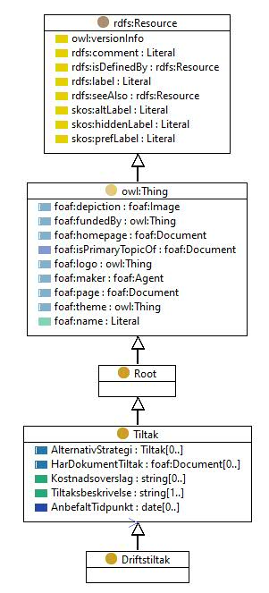

https://ontologi.atlas.vegvesen.no/v441/core/v441-owl#Driftstiltak
Class Driftstiltak

rdf:type
owl:Class
rdfs:label
Operating measures
Driftstiltak
rdfs:subClassOf
Tiltak
owl:disjointUnionOf
[
Rengjoring_av_de_forskjellige_elementene_pa_brua
,
Annet_tiltak__Driftstiltak
,
Daglige_driftsoppgaver_pa_bevegelige_bruer
,
Opprensk_eller_opprydding_over_og_under_vann
,
Renovasjon
,
Kontroll_eller_service_av_utstyr
]
kode
5.1
References
as owl:disjointUnionOf (
Tiltak
)
as rdfs:subClassOf (
Renovasjon
,
Opprensk_eller_opprydding_over_og_under_vann
,
Annet_tiltak__Driftstiltak
,
Kontroll_eller_service_av_utstyr
,
Daglige_driftsoppgaver_pa_bevegelige_bruer
,
Rengjoring_av_de_forskjellige_elementene_pa_brua
)
Generated with
TopBraid Composer
by
TopQuadrant, Inc.